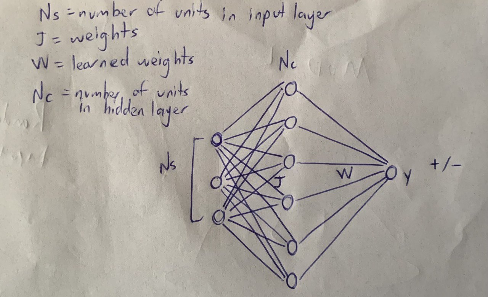
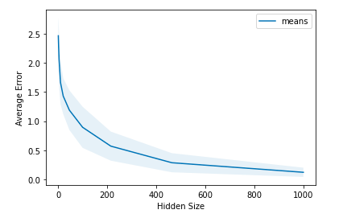

Overview
This project explores the computational benefits of using expansion and sparsity for inputs that are organized in clusters, where each cluster represents different types of stimuli and the variability within clusters is attributed to sensory or neural noise. Inspired by the 2014 work of Babadi and Sompolinsky, which showed that feed-forward random synaptic weights can amplify input variability, this project aims to investigate how these principles apply to a linear regression task.
The original study focused on binary classification, demonstrating that sparsity in downstream neural populations could amplify noise when representing sensory information. Here, I extend their findings to linear regression to explore other computational advantages that expansion and sparsity might offer, especially for clustered inputs.
By using mathematical simulations, I aim to understand how expanding representations in sparse networks can improve computational efficiency or accuracy, providing insights into how biological neural systems might effectively process complex sensory information.
Result
The snippets below shows the model and graph obtained from the simulation.

Perceptron Schematic
The figure above shows the schematic of my perceptron. It includes j weights, which are fixed and randomly initialized; Ns, representing the number of units in the input layer drawn from a Gaussian distribution; Nc, indicating the number of units in the hidden layer; W, representing the learned weights; and y, the output.

Expansion of Hidden Size of a Perceptron
The figure above shows the results of my experiment demonstrating the relationship between the hidden layer size and the average error in a neural network. The graph indicates that as the number of units in the hidden layer (hidden size) increases, the average error decreases, suggesting improved performance with large number of units in hidden layers.